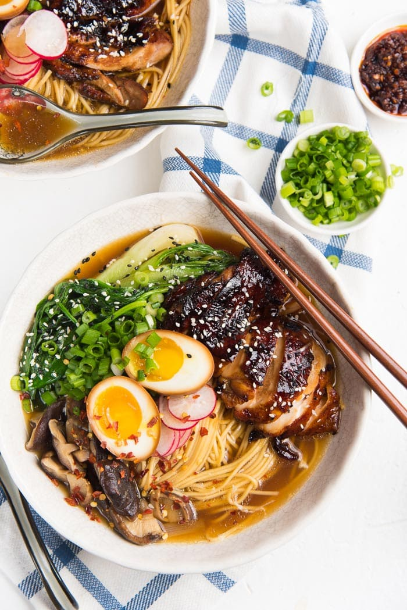
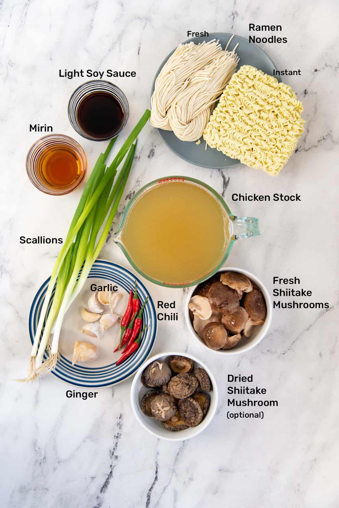

Ramen

The Best Homemade Chicken Ramen
Searching for a simple yet delicious homemade chicken ramen recipe bursting with flavor and adaptable to your preferences? Look no further!
Indulge in this comforting, lively, and flavor-rich ramen recipe crafted for easy preparation at home, promising to elevate your ramen experience to unprecedented heights!
Ingredients
- Chicken stock
- Spring onions
- Garlic
- Ginger
- Fresh red chili
- Light soy sauce
- Mirin
- Fresh Shiitake Mushrooms
- Dried ramen noodles

Steps Involved In Making This Beauty
Caramelised Soy Chicken
- Place all the ingredients for the chicken marinade in a bowl. Mix well to coat the chicken. If time permits, allow the chicken to marinate for at least 1 hour.
- Preheat the oven to 425°F / 218°C, and place an oven rack in the top third of your oven. Line a baking sheet with parchment paper.
- Place the chicken pieces on the baking sheet, skin side down (or smooth side down), evenly spaced apart. Then place the baking sheet in the preheated oven (upper third).
- Let the chicken roast for 15 minutes. While the chicken is cooking, mix the brown sugar and dark soy sauce for the glaze, and start making the ramen.
- After 15 minutes, flip the chicken pieces over and spoon the glaze over them. Let the chicken cook for a further 10 – 15 minutes. Then remove from the oven and let them cool down.
- Slice the chicken and set aside.
Ramen
- While the caramelized soy chicken is cooking in the oven, make the ramen base.
- Place two saucepans on the stove.
- As an optional step, you can chop the garlic and ginger. Or you can add them whole or sliced, and strain the ramen stock to remove the large pieces of garlic and ginger later.
- In one saucepan (Pot 1), place the stock, ginger, garlic, spring onions, chili (if using), soy sauce, and mirin. Stir and cover the pot. Let it come to a boil at medium high – high heat.
Then lower the heat to medium and let it simmer for 20 – 25 minutes. Taste the base and add more salt if needed.
- To add more flavor to the stock base, you can also add dried shiitake mushrooms to the broth. The dried mushroom will reconstitute as the stock heats up and add a lot of umami flavor to the broth.
- While Pot 1 is simmering, add water to the second pot (Pot 2), and bring it to a boil. Add the dried noodles to the boiling water and cook according to package directions.
I prefer to cook the noodles for ONE MINUTE LESS than what's recommended on the package, since the noodles will continue to cook for a bit longer when served with hot broth.
The straight ramen noodles I use here take 3 minutes to cook. Drain the noodles and divide into 4 bowls and set aside.
- When the ramen base in Pot 1 has cooked for about 20 – 25 minutes, strain to remove the garlic, ginger, chili, and spring onions.
- Add the strained stock back into the pot and add the mushrooms (fresh and reconstituted dried mushrooms) , and let it cook for a further 5 minutes until the fresh mushrooms have softened. The ramen base is now ready.
To Serve
- Evenly divide the hot stock between the four bowls with ramen noodles.
- Top with the steamed greens, sliced soy chicken, ramen eggs, spring onions, radishes, and other toppings you like.